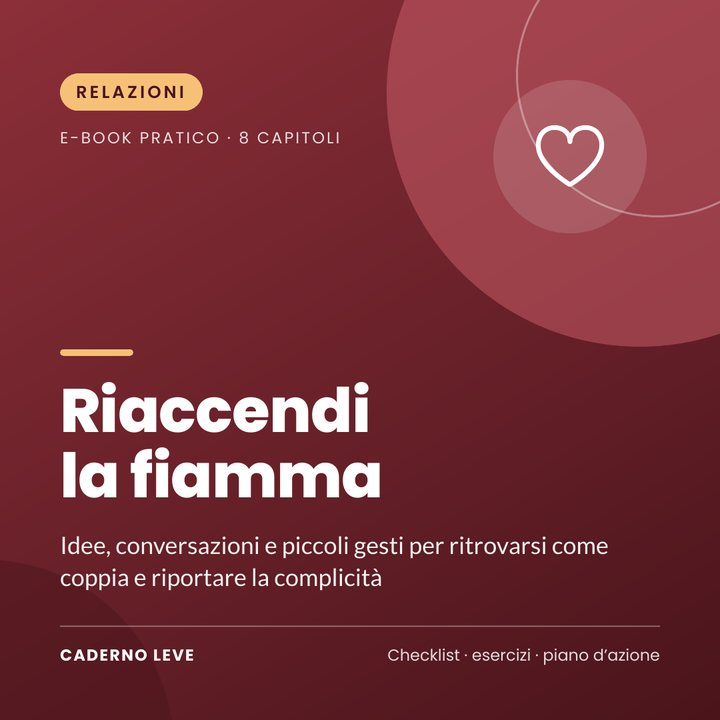

'Riaccendi la fiamma: rinnovare la relazione'
Idee, conversazioni e piccoli gesti per ritrovarsi come coppia: diagnosi della relazione, 30 idee di appuntamenti, domande che avvicinano e una sfida di 30 giorni.
Pagamento sicuro e consegna del PDF tramite Kiwify
Prezzo in real brasiliani (BRL). Al pagamento vedrai l’importo nella tua valuta.
Vi volete bene, ma vivete come coinquilini? Si può uscire dal pilota automatico e ritrovare la complicità.
Riaccendi la fiamma è un e-book pratico, scritto in modo semplice, per coppie che vogliono ritrovarsi. Raccoglie idee basate sulla ricerca sulle relazioni, domande per conversazioni più profonde, proposte di novità e appuntamenti economici e una sfida di 30 giorni.
Imparerete a fare una diagnosi onesta della relazione, a rispondere alle piccole richieste di connessione, a tornare a conoscervi, a portare novità nella routine, a parlare di affetto e intimità con rispetto e a creare rituali che proteggono la complicità.
Che cosa otterrai
- Capire perché la fiamma si abbassa, senza sensi di colpa
- Fare il termometro della coppia e scegliere da dove cominciare
- Coltivare piccoli gesti quotidiani di connessione
- Usare domande che avvicinano e aggiornano la mappa dell’amore
- Avere 30 idee di appuntamenti, a casa o fuori
- Creare rituali che mantengono viva la relazione
Che cosa contiene
- Capitolo 1Perché la fiamma si abbassa
- Capitolo 2Come sta la nostra relazione?
- Capitolo 3I piccoli gesti di ogni giorno
- Capitolo 4Conoscersi di nuovo
- Capitolo 5Novità a due
- Capitolo 6Appuntamenti a due
- Capitolo 7Affetto, contatto e intimità
- Capitolo 8Mantenere viva la complicità
- ExtraRiepilogo e piano d’azione per passare alla pratica
- ExtraScheda di lavoro e checklist da stampare
Per chi è
- Coppie che sentono la relazione in pilota automatico
- Chi vuole più connessione, affetto e divertimento in due
- Coppie con figli e giornate piene
Per chi non è
- Non sostituisce la terapia di coppia o sessuale
- Non è indicato per relazioni con violenza: in questi casi la priorità è la sicurezza (linea antiviolenza o numero di emergenza)
Bonus: scheda di lavoro della coppia — lista di sogni e novità, tabella dei rituali e checklist, più una sfida di 30 giorni.
Avvertenza importante
Questo e-book ha uno scopo informativo e di cura di sé. Non fa diagnosi, non è una terapia e non sostituisce la psicoterapia né il supporto medico. Se il malessere è intenso, dura a lungo o interferisce con la tua vita, rivolgiti a uno psicologo o a una psicologa, al tuo medico di base o ai servizi sanitari della tua zona.
Se hai bisogno di parlare con qualcuno adesso, contatta una linea di ascolto o di supporto nelle crisi del tuo Paese. In caso di emergenza, chiama il numero di emergenza locale.